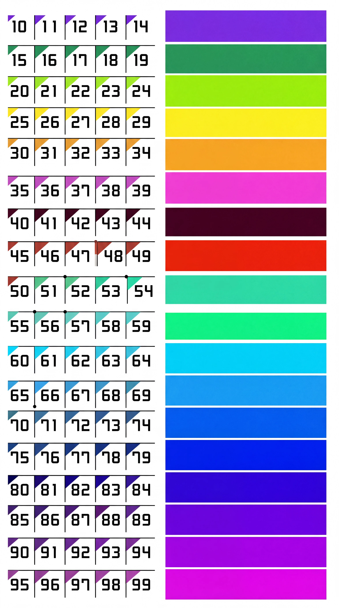

0렙 - 어떻게 가는지도 모르는 핵폐기물
1렙 - 찐 새유저는 없고 눈팅하다 가입시즌에 가입 or 개 티나는 바이럴쟁이들 .
2~9렙 - 렉카잘 안하고 가끔 글쓰거나 글안쓰고도 가는 레벨. 이 레벨에서 개뜬금없이 자연스럽게 ㅇㄱㄸ 갈기는 확률이 아주 높다.
10 ~19렙 - 렉카 슬슬 하는 유저들 많은 구간 비교적 정상적인 렉카글들이 많거나 아예 혐오 갈라치기만 퍼오는 렉카가 갈림.
20~29렙 - 본격적으로 렉카하는 유저들. 여기서부터 각자 분야 파서 혐오들 유머든 시사든 퍼온다 나도그렇고 각자 글 건져오는 고유 사이트 하나씩은 있는듯
30~39렙 - 이쯤되면 본업이 개드립인듯 싶다. 언제 어느시간에 개드립 하든 꾸준히 글 쓰고있음. 개인적으로 여기서부터 정신 헤까닥한 애들이 많이보임. 혐오글도 급격하게 많이 쓴다. ㅇㅎ글은 보라렙이 제일 많이 쓴다.
40-41렙 - 밥먹고 개드립만 함
심심이 아니면 공구홍보하는 블로거지